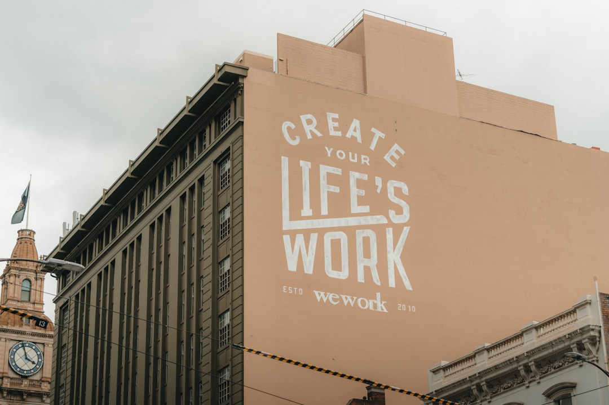

For Australian businesses comparing web design services australia options, the practical decision is whether a provider can turn a site brief into a clear, conversion-focused experience without vague inclusions.
Web Design Services Australia Explained
Best Website Creation presents a concise offer: free conversion-focused web design for Australian businesses. That is the reliable factual baseline for this guide. It supports a buyer conversation about website outcomes, not a long list of unverified inclusions, packages, industries or delivery promises.
A sensible reading of that offer is that the website should be judged by how well it helps a visitor understand the business, take the next step, and trust the information on the page. Conversion-focused design can include layout, copy hierarchy, calls to action and page speed discussions, but the source text does not specify a technical stack, number of pages, hosting arrangement, support period or guaranteed result.
Before committing, ask for a written scope that separates the free design component from any paid services, optional upgrades, hosting, maintenance, content writing, search optimisation or third party costs. The clearer that document is, the easier it is to compare providers without relying on sales language.
Who this applies to
This guide is for Australian business owners who know they need a stronger website but do not yet have enough detail to compare proposals. It is especially relevant when the first offer sounds attractive because it uses the word free, but the commercial arrangement still needs to be understood.
- New businesses should ask whether branding, copy, domain setup and launch support are included or separate.
- Established businesses should check whether existing content, analytics, redirects and search visibility are protected during a redesign.
- Service businesses should ask how enquiry forms, calls to action and trust signals will be placed on key pages.
- Owners comparing Brisbane focused advice can also review this related guide to web design in Brisbane for a narrower local angle.
The shared principle is simple: define the job before judging the offer. A short website brief, a list of must-have pages and a note on how leads are currently received can prevent confusion later.
Questions to ask before accepting a free design offer
A free design claim should not be dismissed, but it should be made precise. Ask what happens after the mock-up or initial build is approved. Some models recover costs through hosting, monthly service plans, advertising retainers, SEO work, premium features or content production. Those may be reasonable, provided they are explained before work begins.
Useful questions include:
- What is included in the free part of the project?
- What parts of the website will the business own after launch?
- Can the site be moved to another host or developer later?
- How many revision rounds are included?
- Who writes, approves and updates the page content?
- Are forms, analytics, privacy notices and accessibility checks part of the scope?
The Australian Competition and Consumer Commission is a useful authority for general consumer and business conduct principles, including clear representations and fair dealing. For website quality, the World Wide Web Consortium is the reference point for open web standards. Neither authority evaluates this provider, but both help frame the due diligence questions.
How to judge conversion-focused design
Conversion-focused web design should make the next step obvious without turning the page into a hard sell. A visitor should quickly see what the business does, who it serves, why it is credible, and how to enquire. For a local service business, the highest value pages are often the home page, service pages, contact page and any proof pages that support trust.
Look for a proposal that explains the page structure in plain language. The designer should be able to say which sections answer buyer doubts, which sections invite action, and which pages are intended for search discovery. If search engine optimisation is discussed, ask whether the plan includes keyword research, page titles, internal links, readable copy and technical basics, rather than treating SEO as a vague add-on.
Do not expect a provider to guarantee search positions or enquiry volumes from design work alone. Search engine results depend on many factors outside a single page build, including content relevance, competition, links, site performance and ongoing maintenance. A grounded proposal will describe the controllable work and avoid certainty where there is none.
Practical evidence to request
Because the source page is brief, the safest next step is to request evidence rather than assume details. A business can ask for sample page layouts, a draft site map, a plain-English scope and a list of ongoing costs before agreeing to proceed. Those materials matter more than broad claims about creativity or growth.
For accessibility and usability, ask whether the build follows modern HTML practices and whether pages are tested on common mobile and desktop screen sizes. The World Wide Web Consortium publishes standards used across the web, so it is reasonable to ask a designer how their workflow aligns with standard, accessible page structure.
For commercial confidence, keep the buying conversation documented. If an offer is described as free, ask which part is free, what triggers payment, and whether cancelling affects access to domain names, design files or published content. Clear answers make it easier to compare web design services australia providers on substance instead of headline wording.
- Write a short brief. List the pages, business goal, preferred enquiry method and any existing content before comparing providers.
- Ask for inclusions. Request a written explanation of what is free, what is paid, and what becomes an ongoing cost.
- Check ownership. Confirm who controls the domain, hosting account, site files, analytics and published content after launch.
- Review standards. Ask how the site will be built for mobile usability, accessible structure and basic search visibility.
- Compare calmly. Judge each proposal against the same scope so a low entry price does not hide unclear obligations.
| Decision point | Free design offer | Paid fixed-scope quote |
|---|---|---|
| Upfront cost | May start at no design fee, but confirm related charges | Usually states a project price before work begins |
| Scope clarity | Needs careful questions about inclusions and ownership | Should list pages, deliverables and revision rounds |
| Best use | Worth exploring when the written terms are clear | Useful when budget, timeline and deliverables must be fixed early |
| Risk check | Ask what happens after launch and if the site can move later | Ask what is excluded and what changes cost extra |
This guide covers how Australian businesses can assess a free conversion-focused web design offer before choosing a provider.